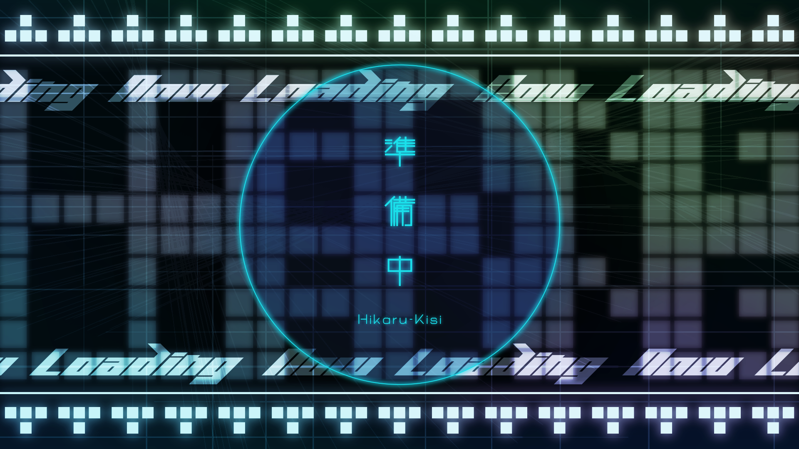
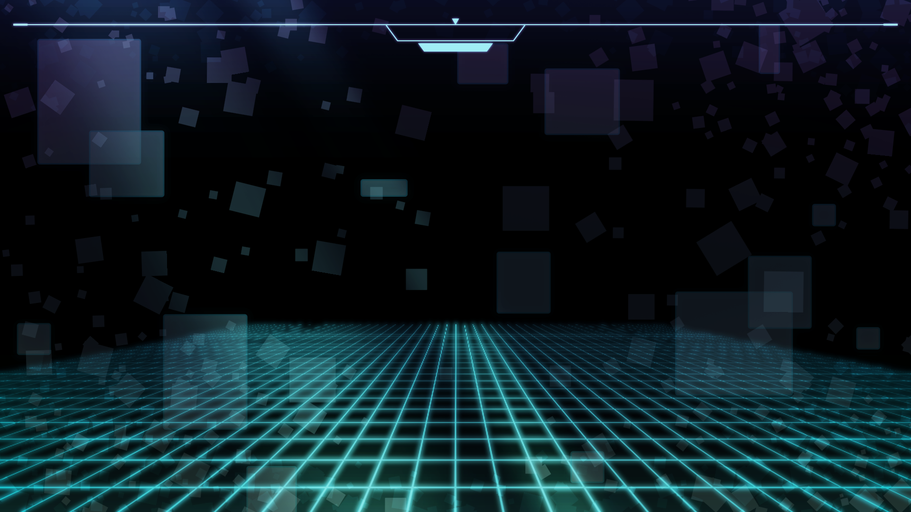
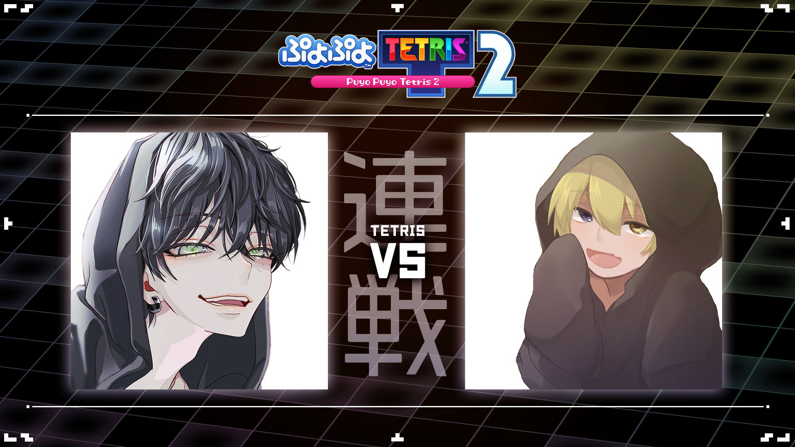
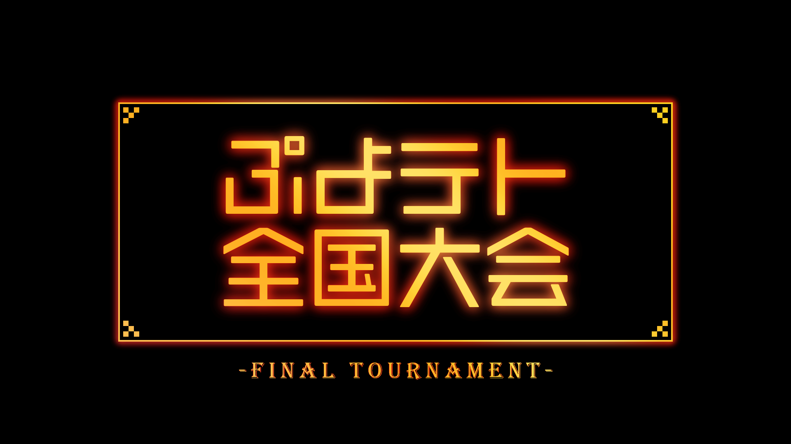
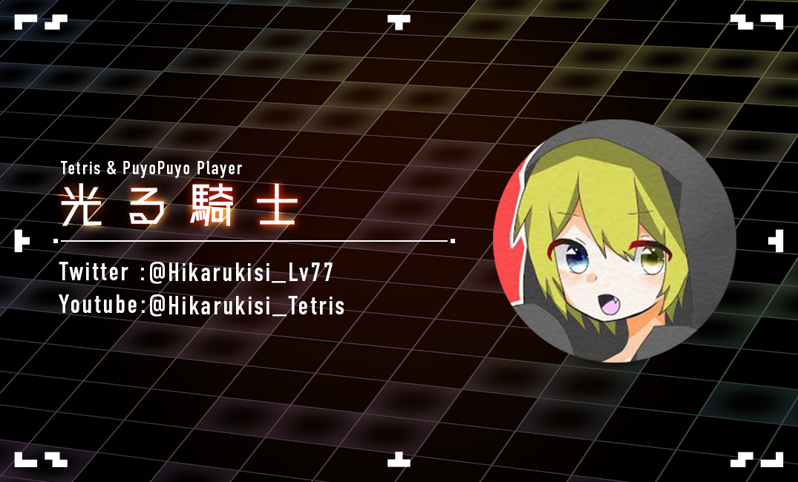

←Graphic
配信サムネイル・背景素材
YouTube配信で用いるアセットのデザイン依頼をいただきました。最初に配信待機画面と背景素材の依頼をいただき、その後サムネイルや名刺等のデザイン依頼もいただきました。
ゲーム配信で用いるかっこいいデザインをご希望でしたので、ダークな背景に青色を基調としたサイバーチックな雰囲気にデザインしました。待機画面は、動画編集者の方にアニメーションをつけてもらい、動画形式で納品しました。
サムネイルや名刺のデザインでは、待機画面や背景素材よりもよりスタイリッシュなものが良いとのことでしたので、前回の流れを汲みつつ、黒をベースに引き締まったデザインにしました。連戦のサムネイルでは、対戦カードがわかりやすいように、それぞれのプレイヤーアイコンを大きく表示しました。
配信待機画面
背景画像
配信の様子

サムネイル
 名刺
